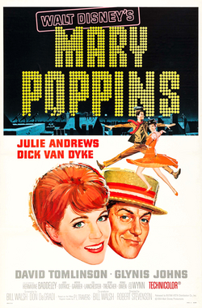

Mary Poppins / The Wizard of Oz
Oct 29–Nov 8, 2026

Mary Poppins (1964)139 minOctober 29–November 1
7:30 (plus 3:05 Sat/Sun)
November 5–8
7:30 (plus 3:05 Sat/Sun)
From the Stanford Theatre program page
Preserved copy of the original page (text and images), saved Oct 23, 2026.
Stanford Theatre Movie Guide
Thursday · Friday · Saturday · Sunday
October 29 - November 1
- Mary Poppins (1964): 7:30 (plus 3:05 Sat/Sun)
- The Wizard of Oz (1939): 5:35, 10:00
November 5-8
- Mary Poppins (1964): 7:30 (plus 3:05 Sat/Sun)
- The Wizard of Oz (1939): 5:35, 10:00
Additional movie information links provided courtesy of the Internet Movie Database. Note: The Internet Movie Database is a commercial enterprise. We link only so you can get additional movie info. We do not endorse any product on other sites.